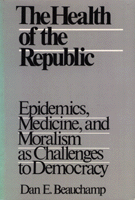

A link between the health of the American republic and the health of its citizens
A link between the health of the American republic and the health of its citizens


 A link between the health of the American republic and the health of its citizens
A link between the health of the American republic and the health of its citizens

|  |
The Health of the RepublicEpidemics, Medicine, and Moralism as Challenges to DemocracyDan E. Beauchamppaper EAN: 978-0-87722-729-8 (ISBN: 0-87722-729-2) |
"[H]e is realistic enough to know that the inmates are too often in charge of our medical asylum. A knotty and illuminating exposition and a way out of our current problems."
—Boston Globe
"This book is about the link between equality and the health of the American republic, the health of its citizens as well as of its democratic institutions." In a timely and controversial discussion, Dan Beauchamp translates the public health viewpoint into the language of social justice and equality. Arguing that "public health" and not "health care" ought to be of prime importance, he puts community interests at the center of a theory of equality. He also demonstrates how protecting the public health is often a matter of strengthening civil liberties. Beauchamp confronts current debates on AIDS, equality in health care, restrictions on smoking, abortion, alcoholism, and drug abuse to discuss the role of government in protecting the public�s health.
Drawing on political philosophy and theories of democracy and equal citizenship, Beauchamp rejects the thesis that the republic�s health depends on choosing between the welfare of the community and the freedom of the individual. Seeing both values as necessary in an egalitarian health policy, he analyzes the dilemma of choosing whether freedom or community ought to dominate in the several spheres of a democratic society that are critical to the public�s health.
"An original and highly important book.... [It] should be urgent reading for those responsible for America�s health."
—Daniel Callahan, Director, The Hastings Center, and author of Setting Limits
"In The Health of the Republic, Beauchamp sets forth the notion of �republican equity� as the basis for providing medical cure and all will find it a thought-provoking challenge."
—The New England Journal of Medicine
"Beauchamp�s volume...represents the forceful expression of a public vision that stands as a challenge to the now dominant forces in American society."
—Medical Humanities Review
"This is an important new perspective on a central social controversy. It is also compelling."
—William M. Sullivan, La Salle University, and co-author of Habits of the Heart
"A notable statement on health issues by a prominent leader in the campaign to reform American health policies."
—David F. Musto, M.D., Yale University School of Medicine, and author of The American Disease
Dan E. Beauchamp is Professor of Health Policy and Administration in the School of Public Health at the University of North Carolina, Chapel Hill, and the author of Beyond Alcoholism: Alcohol and Public Health Policy (Temple) and Health Care Reform and the Battle for the Body Politic (Temple).
Health and Health Policy
Political Science and Public Policy
Health, Society, and Policy, edited by Sheryl Ruzek and Irving Kenneth Zola.
No longer active.
Health, Society and Policy, edited by Sheryl Ruzek and Irving Kenneth Zola, takes a critical stance with regard to health policy and medical practice, ranging broadly in subject matter. Backlist titles include books on the legal and professional status of midwifery, the experience and regulation of kidney transplants, the evolution of federal law on architectural access, and a political/ethical argument for making the community responsible for universal access to health care.
© 2015 Temple University. All Rights Reserved. This page: http://www.temple.edu/tempress/titles/556_reg.html.